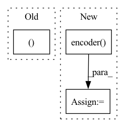

Pattern ID :23843
Before Change
if self.args.normalize:
z = nn.functional.normalize(z, dim=1)
return h, z
After Change
def forward(self, x_i, x_j):
h_i = self.encoder(x_i)
h_j = self.encoder( x_j)
z_i = self.projector(h_i)
z_j = self.projector(h_j)
if self.args.normalize:
z_i = nn.functional.normalize(z_i, dim=1)
z_j = nn.functional.normalize(z_j, dim=1)
return h_i, h_j, z_i, z_j
In pattern: SUPERPATTERN
Frequency: 4
Non-data size: 3
Instances Fragment ID: 74330046
Project Name: spijkervet/simclr
Commit Name: 212fdff7e52da4cac9eaafa1df97a12e59ae7603
Time: 2020-07-10
Author: janne.spijkervet@gmail.com
File Name: modules/simclr.py
M Class Name: SimCLR
N Class Name: SimCLR
M Method Name: forward(3)
N Method Name: forward(2)
M Parent Class: nn.Module
N Parent Class: nn.Module
M File Name: modules/simclr.py
N File Name: modules/simclr.py
M Start Line: 47
M End Line: 52
N Start Line: 45
N End Line: 56
Before Change
x = torch.transpose(x, 1, 2) // (B, N, C)
if self.lstm is not None:
x, _ = self.lstm(x)
x = self.dropout(F.relu(x)) // (B, N, H*2)
if self.conv is not None and self.lstm_cnn:After Change
def make_param(self, seq):
device = next(self.parameters()).device
x = self.embedding(["0" + s for s in seq]).to(device) // (B, 4, N)
x = self.encoder( x) // (B, N, C)
B, N, C = x.shape
// if self.use_bilinear: Fragment ID: 74330053
Project Name: keio-bioinformatics/mxfold2
Commit Name: d865de399a7d6ce51436de7012d82d9b527e8a31
Time: 2019-11-08
Author: satoken@bio.keio.ac.jp
File Name: dnnfold/fold/positional.py
M Class Name: NeuralFold
N Class Name: NeuralFold
M Method Name: make_param(2)
N Method Name: make_param(2)
M Parent Class: nn.Module
N Parent Class: nn.Module
M File Name: dnnfold/fold/positional.py
N File Name: dnnfold/fold/positional.py
M Start Line: 204
M End Line: 227
N Start Line: 137
N End Line: 139
Before Change
self.proj = nn.Linear(emb_size, k)
def forward(self, history, lengths):
batch_size, seq_len = history.shape
valid_his = (history > 0).long()
his_vectors = self.i_embeddings(history)
After Change
def forward(self, history, lengths, t_history, user_min_t):
valid_his = (history > 0).long()
his_vectors = self.i_embeddings(history)
his_vector = self.encoder( his_vectors, lengths, valid_his, t_history, user_min_t)
intent_pred = self.proj(his_vector) // bsz, K
return his_vector, intent_pred
Fragment ID: 74330050
Project Name: thuwangcy/rechorus
Commit Name: 7c6b4cfaf0b7765452a8e750212a05ddf29aaae7
Time: 2021-08-16
Author: THUwangcy@gmail.com
File Name: src/models/developing/TiMiRec.py
M Class Name: IntentPredictor
N Class Name: IntentPredictor
M Method Name: forward(5)
N Method Name: forward(3)
M Parent Class: nn.Module
N Parent Class: nn.Module
M File Name: src/models/developing/TiMiRec.py
N File Name: src/models/developing/TiMiRec.py
M Start Line: 207
M End Line: 224
N Start Line: 217
N End Line: 222
Before Change
B, C, N = x.shape
x = torch.transpose(x, 1, 2) // (B, N, C)
if self.lstm is not None:
x, _ = self.lstm(x)
x = self.dropout(F.relu(x)) // (B, N, H*2)
if self.conv is not None and self.lstm_cnn:After Change
def make_param(self, seq):
device = next(self.parameters()).device
x = self.embedding(["0" + s for s in seq]).to(device) // (B, 4, N)
x = self.encoder( x)
B, N, C = x.shape
score_paired = self.fc_paired(x).view(B, N, N) // (B, N, N)
score_unpaired = self.fc_unpaired(x).view(B, N) // (B, N) Fragment ID: 74330048
Project Name: keio-bioinformatics/mxfold2
Commit Name: d865de399a7d6ce51436de7012d82d9b527e8a31
Time: 2019-11-08
Author: satoken@bio.keio.ac.jp
File Name: dnnfold/fold/nussinov.py
M Class Name: NussinovFold
N Class Name: NussinovFold
M Method Name: make_param(2)
N Method Name: make_param(2)
M Parent Class: nn.Module
N Parent Class: nn.Module
M File Name: dnnfold/fold/nussinov.py
N File Name: dnnfold/fold/nussinov.py
M Start Line: 161
M End Line: 177
N Start Line: 93
N End Line: 95